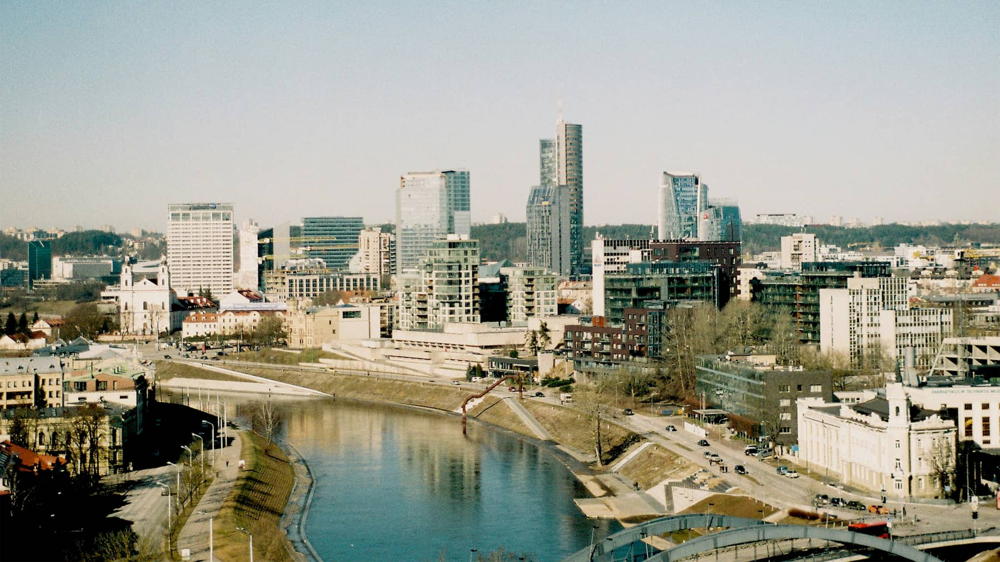

Užstatymo raida
Pastatų žemėlapiai leidžia matyti, kaip skirtingose miesto dalyse pasiskirstę senesni ir naujesni pastatai.

Interaktyvūs miesto duomenys
Apie atlasą
Ši svetainė veikia kaip interaktyvus atlasas. Čia surinkti keli skirtingi žemėlapiai, kurie padeda paprasčiau peržiūrėti Vilniaus miesto duomenis pagal skirtingas temas.
Pastatų žemėlapiai leidžia matyti, kaip skirtingose miesto dalyse pasiskirstę senesni ir naujesni pastatai.
Gyventojų ir verslo sluoksniai padeda palyginti teritorijas ir geriau suprasti miesto aktyvumą.
Galima peržiūrėti susisiekimo informaciją ir pateikti naują verslo objekto ar teritorijos pasiūlymą.
Žemėlapiai
Pasirinkite žemėlapį iš katalogo. Žemėlapis bus atidarytas tame pačiame peržiūros lange.
Paspauskite vieną iš žemėlapių kataloge. Žemėlapis bus įkeltas šiame lange.
Žemėlapis kraunasi...
Pasiūlymai
Jei norite, galite pateikti naujo verslo objekto arba galimos verslo teritorijos pasiūlymą. Taip pat galite atidaryti interaktyvų pasiūlymų žemėlapį ir peržiūrėti jau pateiktus pasiūlymus.
Atlase naudojami Vilniaus miesto erdviniai duomenys, viešai prieinamos žemėlapių paslaugos ir praktinių darbų metu parengti teminiai sluoksniai. Žemėlapių peržiūrai naudoti Kepler.gl, QGIS Cloud, geoportal.lt ir ArcGIS Online sprendimai.